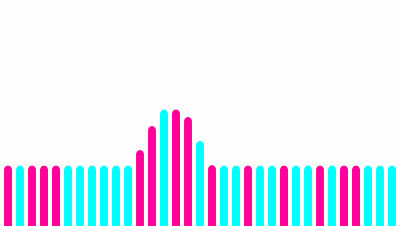
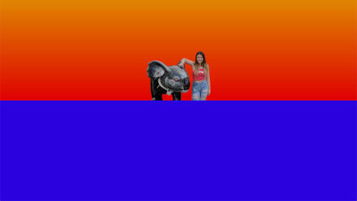

I made these during a cruise trip in 2019.
Source Code Available on Github
My first jump back into 2d animations in ~5 years. Features a set of lines that wave up and down. Density of the lines can be tweaked to make the lines more or less dense.
My first time using a javascript library to play the piano. I wrote the notes from memory here (it's just Yankee Doodle), the more interesting programming challenges were invloved in timing (since you can't acurately schedule things to run in Javascript). I went back after this one and mixed a few piano notes into the lines experiment above.
I asked Joelle if she would like to request an animation. This is the result, a poor mans attempt at a mexican wave with lines.
Joelle made yet another suggestion for an animation. She wanted to see herself as the sun setting over the sea. So I cropped an image of her and did just that.
